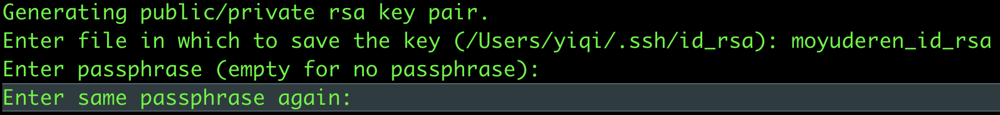

github多账号设置
本文最后更新于：2022-08-04 04:21:59
github多账号配置
操作步骤
- 首先进入.ssh目录
cd ~/.ssh - 生成公私钥
ssh-keygen -t rsa -C "moyuderen"
注意：到这一步时是对私钥进行命名，这里我命名为moyuderen_id_rsa
注意：到这一步时是设置密码，一路回车即可

成功：看到下面的样子就是生成公私钥成功了
使用ls会看到在.ssh目录下多出了 moyuderen_id_rsa和moyuderen_id_rsa.pub 一对公私钥

- 把moyuderen_id_rsa.pub里面的内容添加到github里即可(相信这一步都会的)
- 配置config文件
如果在~/.ssh目录下没有config文件，可以使用touch config创建，然后使用vim config编辑config文件（或者使用编辑器编辑）
编辑好的config文件内容

1 | |
- 因为系统默认只读取id_rsa，为了让ssh识别新的私钥，可以使用ssh-agent手动添加私钥
ssh-add ~/.ssh/moyuderen_id_rsa - 测试连接
ssh -T git@moyuderen
连接成功

注意：这里正常测试为ssh -T git@github.com;因为我们在config文件中配置了主机名称Host moyuderen所以用moyuderen代替了github.com, 才使用了 ssh -T git@moyuderen进行测试连接
- 拉取仓库代码进行测试
- 原本的操作
git clone git@github.com:moyuderen/git.git - 现在操作需要替换为
git clone git@moyuderen:moyuderen/git.git; 和配置的该账号主机名保持一致
- 设置该仓库提交人的信息（否则和全局冲突无法提交）
git config --local user.name yourusenamegit config --local user.email youremail
最后修改代码提交试试吧
常见报错
Git：git clone时报错remote: HTTP Basic: Access denied fatal: Authentication failed for
原因：重置了密码或拉取代码时输错密码导致操作失败，但再次登录时未再弹出重新输入密码界面。
解决方案：在git控制台输入以下命令，然后git clone 时在弹出的界面正确输入账户名和密码即可。
1
2git config --system --unset credential.helper
git config --global credential.helper storegit pull 报错
1
2
3
4
5
6
7
8
9
10
11
12
13hint: You have divergent branches and need to specify how to reconcile them.
hint: You can do so by running one of the following commands sometime before
hint: your next pull:
hint:
hint: git config pull.rebase false # merge
hint: git config pull.rebase true # rebase
hint: git config pull.ff only # fast-forward only
hint:
hint: You can replace "git config" with "git config --global" to set a default
hint: preference for all repositories. You can also pass --rebase, --no-rebase,
hint: or --ff-only on the command line to override the configured default per
hint: invocation.
fatal: Need to specify how to reconcile divergent branches.解决方案：
1
2
3
4git fetch
git merge remotes/origin/uploader
// 解决冲突
git push
参考文章
本博客所有文章除特别声明外，均采用 CC BY-SA 4.0 协议 ，转载请注明出处！